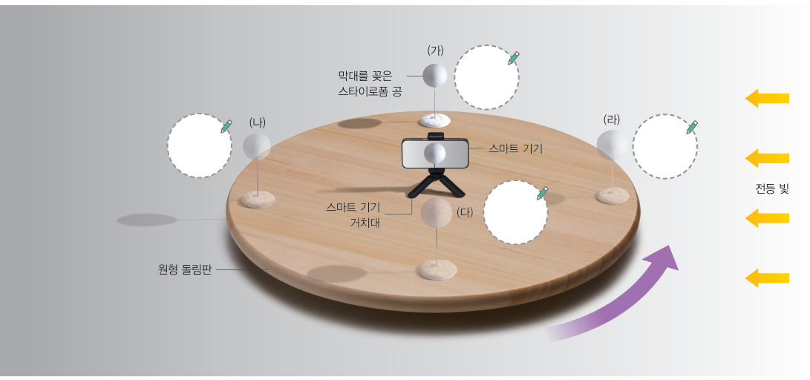
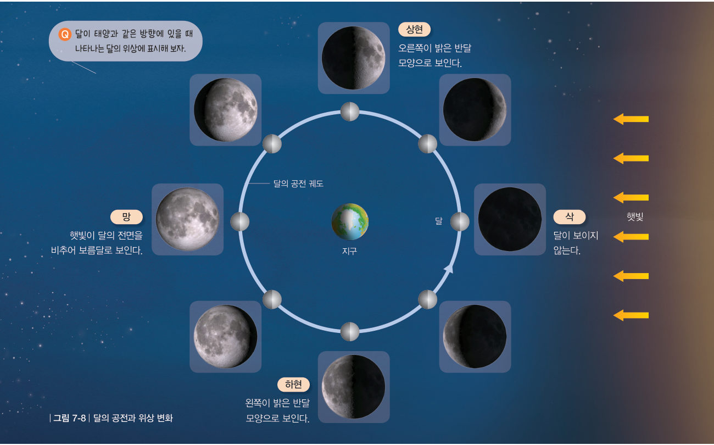
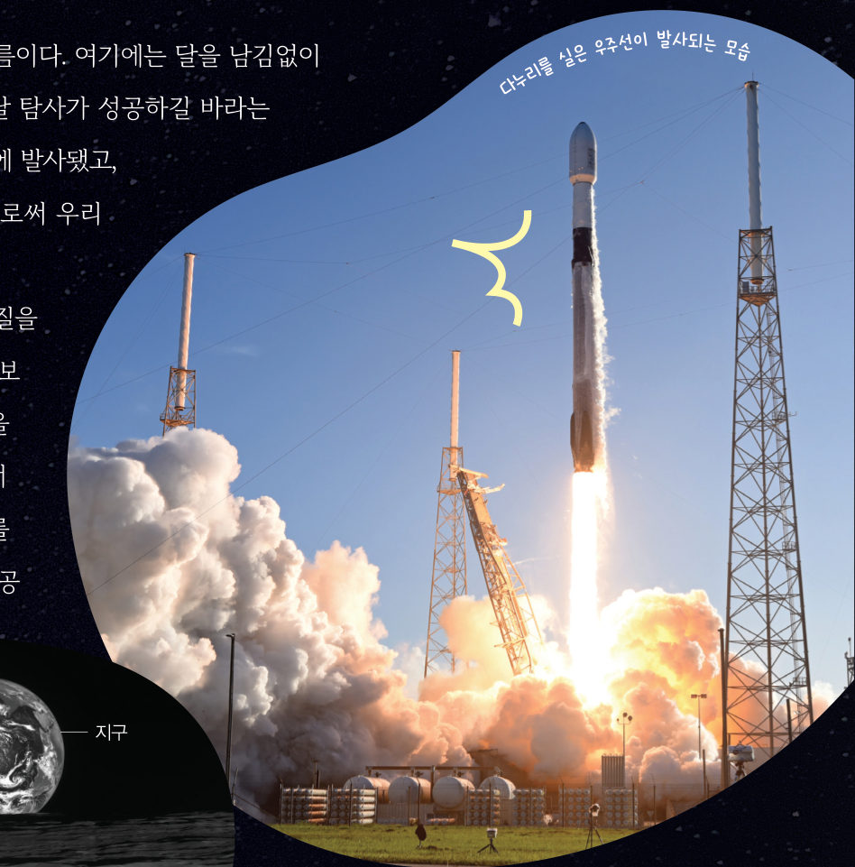
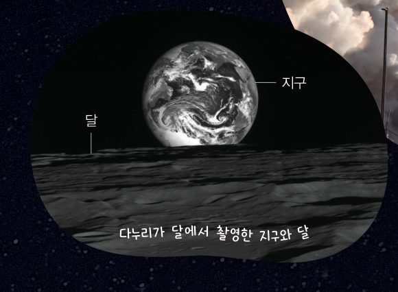

관찰 한국천문연구원 누리집(astro.kasi.re.kr → 생활천문관 → 월별 천문현상)에서 한 달 동안 달의 위상 변화를 조사한다.
가설 설정 달의 위상이 달라지는 까닭을 예상한다.
실내를 어둡게 하고 한쪽에 전등을 켠 다음, 원형 돌림판 가운데에 스마트 기기를 놓는다.
스타이로폼 공을 스마트 기기와 마주 보는 곳에 놓고, 원형 돌림판을 시계 반대 방향으로 돌리며 동영상으로 촬영한다.
관찰 공이 (가)~(라) 위치에 있을 때 밝게 보이는 부분과 어둡게 보이는 부분을 구분하여 표시한다.
242쪽내 모습이 며칠 전에는 다르게 찍혔네.
2가설 설정 달의 위상은 …

243쪽스타이로폼 공의 위치 (가)~(라)와 전등 빛
3D 가상 실험3D 달 모형 — 지구에서 본 달
위치 버튼을 누르거나 [▶ 공전]으로 달을 시계 반대 방향(서→동)으로 돌려 보자. 큰 화면은 위에서 내려다본 모습, 오른쪽 아래 작은 화면은 지구(스마트 기기)에서 본 달이에요. 달은 언제나 태양 쪽 절반만 밝다는 것도 확인해 보자.
3D 모형 · 드래그하여 돌리기-
1스타이로폼 공의 위치에 따라 지구(스마트 기기)에서 보이는 모습을 골라 보자.
(가)
(나)
(다)
(라)
2전등을 태양이라고 할 때 스마트 기기는 , 스타이로폼 공은 을 나타낸다.
3자료 해석 스타이로폼 공의 위치에 따라 밝게 보이는 부분과 어둡게 보이는 부분이 달라지는 까닭을 이야기하고, 가설과 비교하여 달의 위상이 달라지는 까닭을 정리해 보자.
다르게 해 보기 · 달의 위상 변화 모의실험 하기
스마트 기기로 달의 위상 변화 모의실험 프로그램을 찾아 달의 위상 변화를 관찰한다. 정리 달의 위상이 달라지는 까닭을 이야기해 보자.
교과서달의 공전과 위상 변화 244쪽
탐구에서 스타이로폼 공이 전등 빛을 반사하여 밝게 보이는 것과 같이 달은 햇빛을 반사하여 밝게 보인다. 또한 스타이로폼 공이 위치에 따라 스마트 기기에서 밝게 보이는 부분이 달라지는 것과 같이 달도 위치에 따라 위상이 달라진다.
달은 서쪽에서 동쪽으로 지구 주위를 공전하여, 그림 7-8과 같은 위상 변화가 나타난다. 달이 공전하면서 태양과 같은 방향에 있을 때를 삭이라고 한다. 이때 지구에서는 달이 보이지 않는다. 또 달이 태양의 반대 방향에 있을 때를 망이라고 한다. 이때 달은 보름달로 보인다. 그리고 달과 태양이 지구를 중심으로 직각을 이루어 달의 오른쪽 반원이 보일 때를 상현, 왼쪽 반원이 보일 때를 하현이라고 한다.

그림 7-8달의 공전과 위상 변화 — 삭, 상현, 망, 하현
오개념 바로잡기 · 우리나라에서 보름달이 보일 때, 우리나라 반대쪽에서는 밤에 달이 보이지 않을까? 달의 위상은 달의 위치에 따라 달라진다. 따라서 같은 날 달을 관측하면, 달의 위상은 어디에서나 같게 보인다.
1그림 7-8에서 달이 태양과 같은 방향에 있을 때 나타나는 위상은 이다.
스스로 확인하기242쪽 학습 목표를 달성했는지 확인해 보자 244쪽
1개념 확인 달이 태양과 같은 방향에 있을 때를 ( )(이)라고 하고, 태양의 반대 방향에 있을 때를 ( )(이)라고 한다.
2사고력 보름달이 동쪽 하늘에서 보일 때 태양은 서쪽 하늘에 있다. 그 까닭을 설명해 보자.
🧩 두 번째 블록 · 힌트 조각 1 (244쪽)
달은 지구 주위를 서쪽에서 동쪽으로 ( )한다. → 다음 조각은 ‘가려지는 태양과 달’에서!
과학이 톡우리나라 최초의 달 탐사 궤도선, 다누리 245쪽

다누리를 실은 우주선이 발사되는 모습

다누리가 달에서 촬영한 지구와 달
다누리는 ‘달’과 누리다의 ‘누리’가 더해진 이름이다. 다누리는 2022 년 8 월 5 일에 발사됐고, 12 월 27 일에 임무 궤도 진입에 성공했다. 이로써 우리나라는 일곱 번째 달 탐사 국가가 됐다. 다누리는 달 주위를 공전하면서 달의 표면 물질을 분석하고, 달 탐사선이 착륙할 수 있는 후보지를 탐색하며, 세계 최초로 우주 인터넷 기술을 검증하는 등의 임무를 수행했다.
1다누리처럼 달 주위를 공전하는 탐사선은 달을 중심으로 도는 인공 이라고 할 수 있다.
💡창의성 쏙! 우주 탐사 연구원 알아보기 우주 탐사 연구원이 하는 일을 조사하고, 우주 탐사 연구원이 된 나의 모습을 상상하여 글로 써 보자.
5분 테스트모양이 달라지는 달
1지구에서 보이는 달의 모양을 달의 이라고 한다. 달은 지구 주위를 약 한 달에 한 바퀴씩 한다. 달의 공전 방향은 에서 이다.
23D 모형(태양 빛이 오른쪽에서 옴)의 위치에서 (가): — 이 밝은 반달 · (나): — 로 보인다. (다): — 이 밝은 반달 · (라): — 달이 .
3달의 위상이 달라지는 까닭은 달이 지구 주위를 하면서 태양, 지구, 달의 상대적인 위치가 달라지기 때문이다.
⑨ 달은 스스로 빛을 내어 밝게 보인다.
⑩ 달과 태양이 지구를 중심으로 직각을 이루어 달의 오른쪽 반원이 보일 때를 하현이라고 한다.
스스로 정리하기달의 공전으로 나타나는 현상 248쪽
2달의 공전으로 나타나는 현상
(1) 달의 : 달이 지구를 중심으로 서쪽에서 동쪽으로 도는 운동 (2) 달의 위상 변화 · 달의 : 지구에서 보이는 달의 모양 · 달의 위상이 달라지는 까닭: 달이 지구를 중심으로 공전하면서 태양, 지구, 달의 상대적인 위치가 달라지기 때문이다.
제출학생 정보 · 제출하기
모든 활동을 마친 뒤 제출하면 전체가 한 번에 채점되고 피드백이 나타나요. 답안은 선생님 스프레드시트(중1 탭)에 기록돼요.